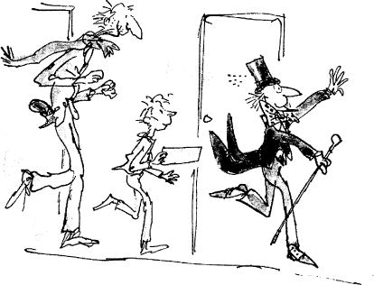

‘Well, well, well,’ sighed Mr Willy Wonka, ‘two naughty little children gone. Three good little children left. I think we’d better get out of this room quickly before we lose anyone else!’
‘But Mr Wonka,’ said Charlie Bucket anxiously, ‘will Violet Beauregarde ever be all right again or will she always be a blueberry?’
‘They’ll de-juice her in no time flat!’ declared Mr Wonka. ‘They’ll roll her into the de-juicing machine, and she’ll come out just as thin as a whistle!’
‘But will she still be blue all over?’ asked Charlie.
‘She’ll be purple!’ cried Mr Wonka. ‘A fine rich purple from head to toe! But there you are! That’s what comes from chewing disgusting gum all day long!’
‘If you think gum is so disgusting,’ said Mike Teavee, ‘then why do you make it in your factory?’
‘I do wish you wouldn’t mumble,’ said Mr Wonka. T can’t hear a word you’re saying. Come on! Off we go! Hurry up! Follow me! We’re going into the corridors again!’ And so saying, Mr Wonka scuttled across to the far end of the Inventing Room and went out through a small secret door hidden behind a lot of pipes and stoves. The three remaining children – Veruca Salt, Mike Teavee, and Charlie Bucket – together with the five remaining grown-ups, followed after him.
Charlie Bucket saw that they were now back in one of those long pink corridors with many other pink corridors leading out of it. Mr Wonka was rushing along in front, turning left and right and right and left, and Grandpa Joe was saying, ‘Keep a good hold of my hand, Charlie. It would be terrible to get lost in here.’
Mr Wonka was saying, ‘No time for any more messing about! We’ll never get anywhere at the rate we’ve been going!’ And on he rushed, down the endless pink corridors, with his black top hat perched on the top of his head and his plum-coloured velvet coat-tails flying out behind him like a flag in the wind.
They passed a door in the wall. ‘No time to go in!’ shouted Mr Wonka. ‘Press on! Press on!’
They passed another door, then another and another. There were doors every twenty paces or so along the corridor now, and they all had something written on them, and strange clanking noises were coming from behind several of them, and delicious smells came wafting through the keyholes, and sometimes little jets of coloured steam shot out from the cracks underneath.
Grandpa Joe and Charlie were half running and half walking to keep up with Mr Wonka, but they were able to read what it said on quite a few of the doors as they hurried by. EATABLE MARSHMALLOW PILLOWS, it said on one.
‘Marshmallow pillows are terrific!’ shouted Mr Wonka as he dashed by. ‘They’ll be all the rage when I get them into the shops! No time to go in, though! No time to go in!’
LICKABLE WALLPAPER FOR NURSERIES, it said on the next door.
‘Lovely stuff, lickable wallpaper!’ cried Mr Wonka, rushing past. ‘It has pictures of fruits on it – bananas, apples, oranges, grapes, pineapples, strawberries, and snozzberries…’
‘Snozzberries?’ said Mike Teavee.
‘Don’t interrupt!’ said Mr Wonka. ‘The wallpaper has pictures of all these fruits printed on it, and when you lick the picture of a banana, it tastes of banana. When you lick a strawberry, it tastes of strawberry. And when you lick a snozzberry, it tastes just exactly like a snozzberry…’
‘But what does a snozzberry taste like?’
‘You’re mumbling again,’ said Mr Wonka. ‘Speak louder next time. On we go! Hurry up!’
HOT ICE CREAMS FOR COLD DAYS, it said on the next door.
‘Extremely useful in the winter,’ said Mr Wonka, rushing on. ‘Hot ice cream warms you up no end in freezing weather. I also make hot ice cubes for putting in hot drinks. Hot ice cubes make hot drinks hotter.’
COWS THAT GIVE CHOCOLATE MILK, it said on the next door.
‘Ah, my pretty little cows!’ cried Mr Wonka. ‘How I love those cows!’
‘But why can’t we see them?’ asked Veruca Salt. ‘Why do we have to go rushing on past all these lovely rooms?’
‘We shall stop in time!’ called out Mr Wonka. ‘Don’t be so madly impatient!’
FIZZY LIFTING DRINKS, it said on the next door.
‘Oh, those are fabulous!’ cried Mr Wonka. ‘They fill you with bubbles, and the bubbles are full of a special kind of gas, and this gas is so terrifically lifting that it lifts you right off the ground just like a balloon, and up you go until your head hits the ceiling – and there you stay.’
‘But how do you come down again?’ asked little Charlie.
‘You do a burp, of course,’ said Mr Wonka. ‘You do a great big long rude burp, and up comes the gas and down comes you! But don’t drink it outdoors! There’s no knowing how high up you’ll be carried if you do that. I gave some to an old Oompa-Loompa once out in the back yard and he went up and up and disappeared out of sight! It was very sad. I never saw him again.’
‘He should have burped,’ Charlie said.
‘Of course he should have burped,’ said Mr Wonka. ‘I stood there shouting, “Burp, you silly ass, burp, or you’ll never come down again!” But he didn’t or couldn’t or wouldn’t, I don’t know which. Maybe he was too polite. He must be on the moon by now.’
On the next door, it said, SQUARE SWEETS THAT LOOK ROUND.
‘Wait!’ cried Mr Wonka, skidding suddenly to a halt. ‘I am very proud of my square sweets that look round. Let’s take a peek.’